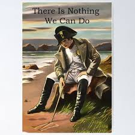
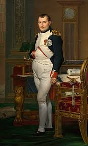

napoleon famous last words
napoleon:there is nothing we can do...>  
Napoleon Bonaparte was a French military general and emperor who rose to prominence during the French Revolution and conquered much of Europe in the early 19th century. He served as First Consul and was crowned the first emperor of France in 1804. Known for his military genius, he is also remembered for the Napoleonic Code and his ultimate defeat at the Battle of Waterloo in 1815, which led to his exile and death at age 51.
The breakdown of the Treaty of Amiens led to the War of the Third Coalition by 1805. Napoleon shattered the coalition with a decisive victory at the Battle of Austerlitz, which led to the dissolution of the Holy Roman Empire. In the War of the Fourth Coalition, Napoleon defeated Prussia at the Battle of Jena–Auerstedt in 1806, marched his Grande Armée into Europe, and defeated the Russians in 1807 at the Battle of Friedland. Seeking to extend his trade embargo against Britain, Napoleon invaded the Iberian Peninsula and installed his brother Joseph as King of Spain in 1808, provoking the Peninsular War. In 1809 the Austrians again challenged France in the War of the Fifth Coalition in which Napoleon solidified his grip over Europe after winning the Battle of Wagram. In the summer of 1812 he launched an invasion of Russia, briefly occupying Moscow before conducting a catastro phic retreat of his army that winter. In 1813 Prussia and Austria joined Russia in the War of the Sixth Coalition, in which Napoleon was decisively defeated at the Battle of Leipzig. The coalition invaded France and captured Paris, forcing Napoleon to abdicate in April 1814. They exiled him to the Mediterranean island of Elba and restored the Bourbons to power. Ten months later, Napoleon escaped from Elba on a brig, landed in France with a thousand men and marched on Paris, again taking control of the country. His opponents responded by forming a Seventh Coalition, which defeated him at the Battle of Waterloo in June 1815. Napoleon was exiled to the remote island of Saint Helena in the South Atlantic where he died of stomach cancer in 1821, aged 51.